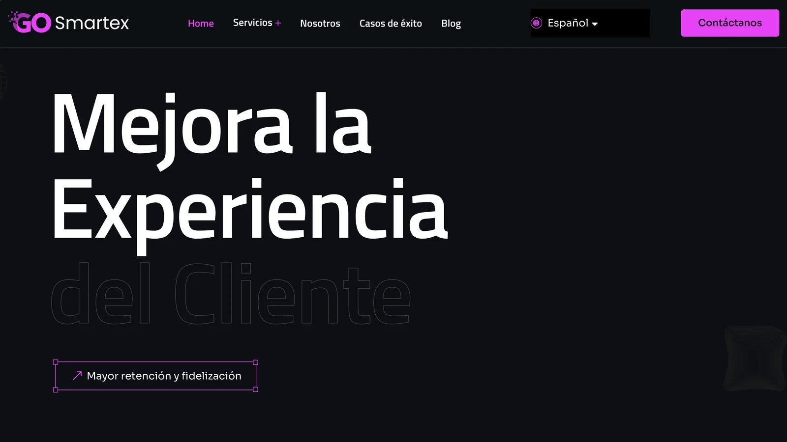
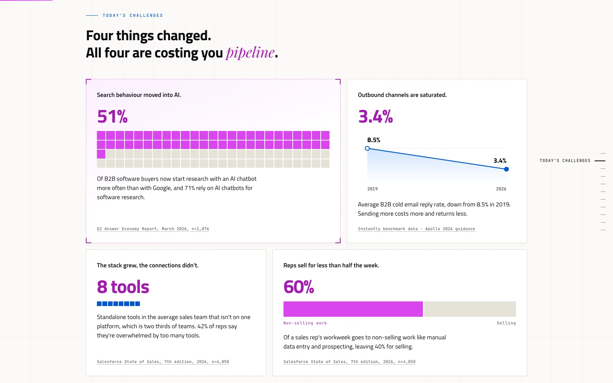
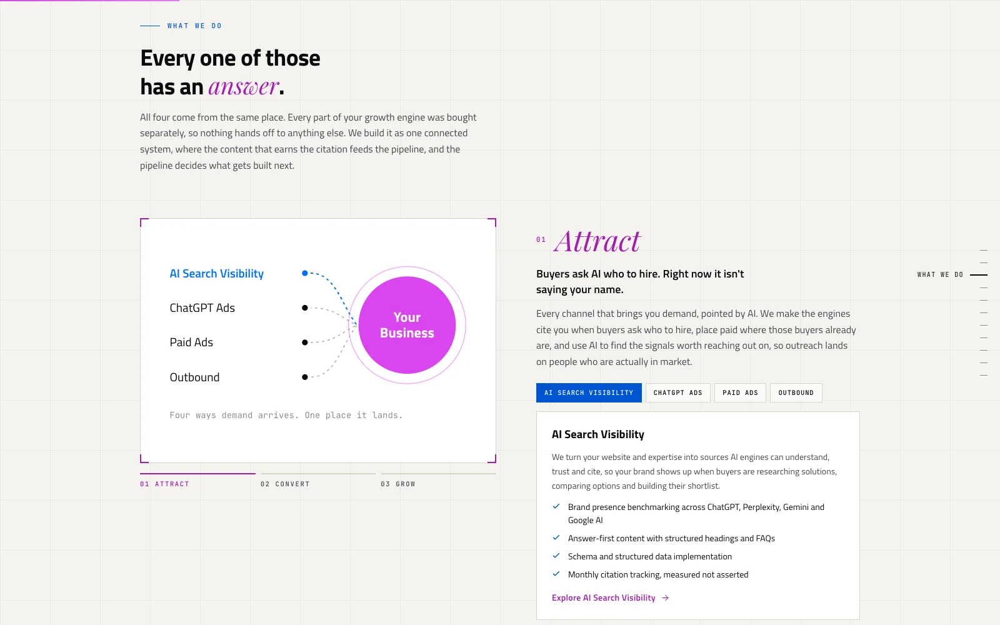
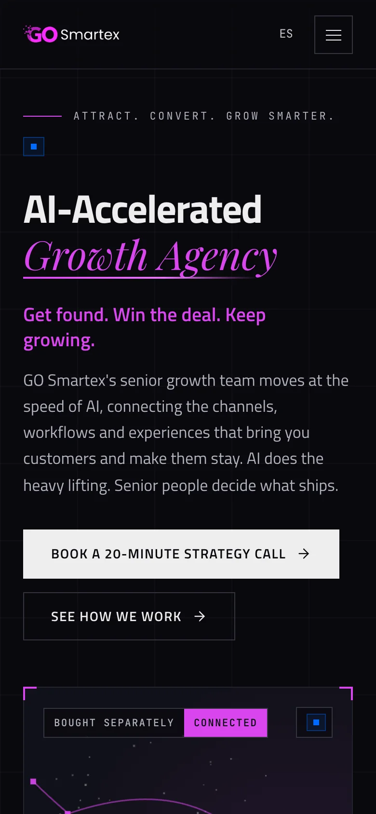

El punto de partida
La primera web era una página básica: un titular genérico, un diseño oscuro y ninguna oferta clara. Decía qué hacía GO Smartex, pero no lo demostraba ni despertaba ganas de saber más.
Franco Mazzochi Diseñador digital · Portfolio ©2026
Diseñador gráfico y UX/UI especializado en branding, web y video. Convierto ideas complejas en experiencias digitales claras y amigables.

Marcas con las que trabajé
En qué estoy trabajando, con quién y con qué.
Presentaciones, marketing y sitios web, con un equipo de diseñadores freelance. El sitio es mi mejor prueba.
Ver el caso de estudioSitios web, branding y refreshes de marca, diseñados y desarrollados con Agustina.
Visitar el estudioReels, cortometrajes y publicidades.
VerlosGO Smartex ayuda a empresas B2B a atraer, convertir y crecer. Su primera web no lo transmitía. Así fue el cambio.

Arrastrá para comparar
La primera web era una página básica: un titular genérico, un diseño oscuro y ninguna oferta clara. Decía qué hacía GO Smartex, pero no lo demostraba ni despertaba ganas de saber más.
La segunda versión encontró el mensaje: Attract. Convert. Grow Smarter. A partir de ahí reconstruí el sitio con Claude como un sistema modular, donde cada sección se adapta a su contenido y la estructura sigue el mismo camino que el crecimiento de sus clientes.
Hoy el sitio muestra todo el potencial de la agencia. Los datos del mercado abren la conversación, cada etapa del embudo tiene su propia oferta y las animaciones hablan el idioma del crecimiento: señales que se conectan en un pipeline, gráficos que suben y canales que orbitan alrededor del negocio del cliente.



Sitios web, prototipos de producto, identidades de marca y piezas de campaña. Abrí cualquier proyecto para ver el detalle.
Reels para podcasts y creadores, además de cortometrajes y publicidades. Arrastrá para explorar.
Creo que el diseño digital debería sentirse inevitable, no impresionante. Las mejores interfaces desaparecen: permiten que las personas logren sus objetivos sin pensar en el diseño en sí.
Trabajo con sistemas coherentes en lugar de pantallas aisladas. Ya sea una arquitectura en WordPress, una identidad de marca o contenido de video, busco patrones que escalen y se adapten.
La complejidad tiene que vivir en el pensamiento, no en la interfaz. Cada elemento tiene que justificar su presencia.
La limitación fuerza mejores decisiones. Diseño con menos elementos, no más.
Las páginas individuales no importan. Los patrones escalables y reutilizables, sí.
Un diseño hermoso que resuelve el problema equivocado es solo ruido.
Lidero el área de diseño y superviso toda la producción visual: presentaciones, marketing y sitios web. Coordino un equipo de diseñadores freelance para asegurar la coherencia de marca y la calidad.
Diseñé piezas para redes y contenido audiovisual, y desarrollé sitios en WordPress (Elementor, Thrive, Divi). Lideré el rebranding (marca, UX/UI y marketing) y la gestión de proyectos y clientes, con un pasante a cargo.
Produje reels a partir de clips de podcast, con texto dinámico y efectos, con foco en el storytelling y en formatos virales para maximizar el engagement y el alcance.
Diseño integral para clientes B2B y B2C: sitios web, UX/UI, branding, contenido para redes y edición de video. Construí soluciones a medida para agencias de marketing, empresas SaaS, empresas de salud y compañías de logística en Estados Unidos y América Latina.
Diseñé contenido visual para redes, alineado a la marca, y piezas de e-commerce y UX. Desarrollé campañas de email marketing y piezas para lanzamientos y webinars junto a los equipos de marketing y ventas.
Carrera de diseño enfocada en lo audiovisual y lo digital: dirección de arte, fotografía, edición y postproducción de video y sonido, motion graphics y diseño web y de interfaces.
Formación en gestión, marketing y finanzas, antes de orientarme al diseño.
Si tenés un desafío que necesita pensamiento sistemático y una ejecución cuidada, hablemos.